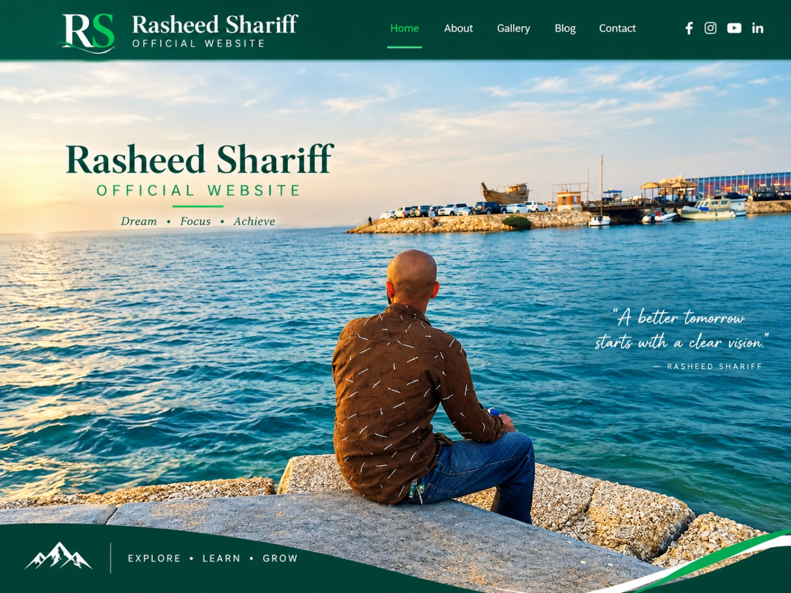

DREAM · FOCUS · ACHIEVE
About Rasheed Shariff
Karibu kwenye Rasheed Shariff Official Website. Hapa utapata taarifa zangu, picha na habari mpya. Maelezo zaidi yataongezwa hivi karibuni.
Gallery

Picha yangu
Picha zaidi
Picha mpya zitaongezwa hapa.
Blog
Karibu kwenye blog yangu
Habari na makala mpya zitapatikana hapa hivi karibuni.
Contact
Maelezo ya mawasiliano yatawekwa hapa baada ya kuyathibitisha.